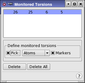

| Using | Features | Links |
This panel is used to set up torsions to be monitored during a dynamics simulation. Results are saved in the .mmo file.
To open this panel, click Torsions in the Monitor tab of the Dynamics panel or the MC/SD panel.
To define a dihedral angle to be monitored, choose Atom or Bond from the Pick menu, and click on four atoms or three bonds in the Workspace that define a dihedral angle. When the dihedral angle is defined, the four atoms appear in the list at the top of the panel. The defined dihedral angles are marked with a red solid line, a dotted line through the dihedral angle, and an eye icon. The selected angle has a thicker line.
To redefine an item, select it in the list and then pick the atoms or bonds in the Workspace.
To delete a torsion from the list, select it in the list and click Delete. To delete all monitored torsions, click Delete All.

Lists the torsions to be monitored. After the fourth atom is picked, a new entry appears in the list.
The Define monitored torsions section contains the standard picking controls, which are used to select atoms that define a torsion. It also contains a Markers option, which you can use to show markers for the monitored torsions in the Workspace.
To delete a monitored torsion, select it in the Monitored Torsions List, then click Delete.
Click this button to delete all monitored torsions.